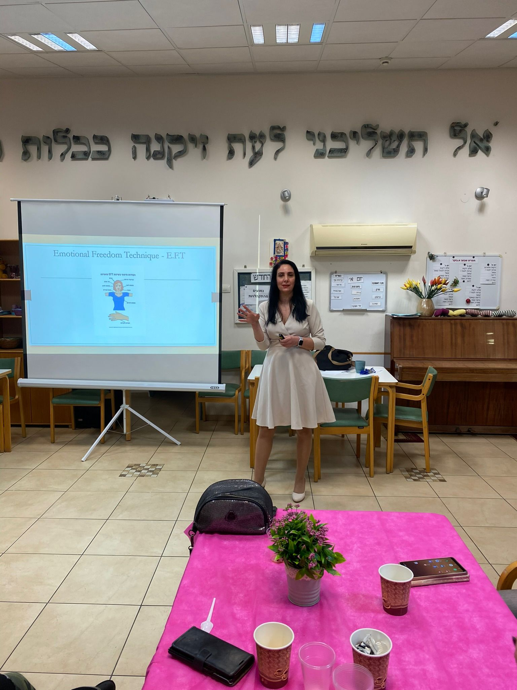
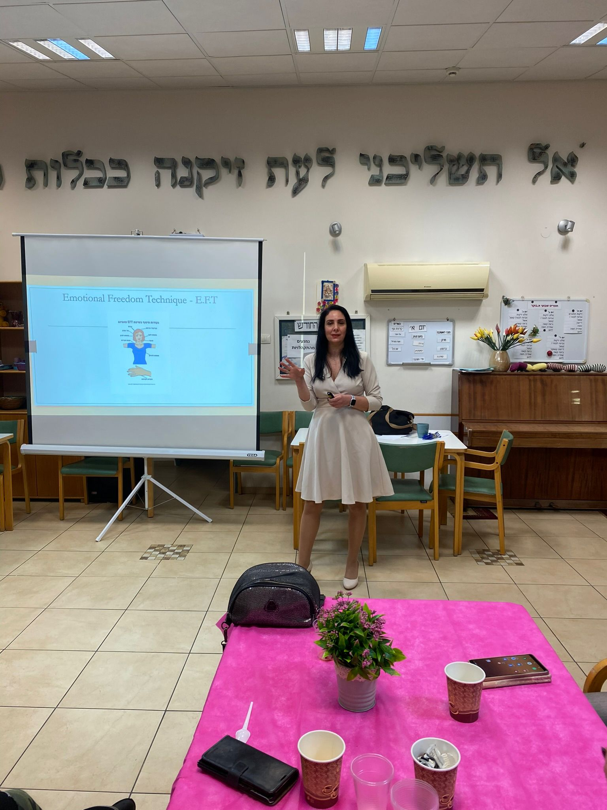
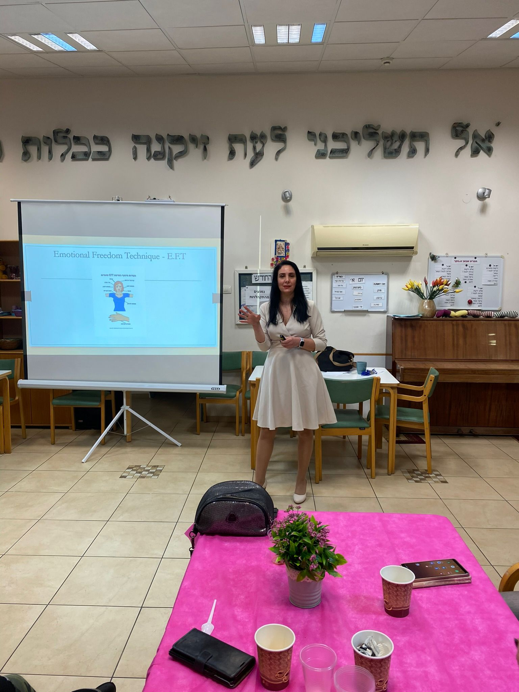

לקט תמונות מתוך סדנאות והרצאות
 


כלי אפקטיבי, מוכח מחקרית וקל ליישום המתאים להתמודדות עם רגעי משבר, סטרס וכאב פיזי. בואו להכיר כלי פשוט שעובד כמו קסם ומסייע להפחתת סטרס, ברמה מיידית ובזמן קצר.
אם הייתי אומרת לכם שיש כלי פשוט שעובד כמו קסם ומסייע להפחתת סטרס, ברמה מיידית ובזמן קצר:
כמו כאב ראש, מיגרנות, כאבי צוואר ועוד
כמו תחושות כעס, כבדות, עייפות, ייאוש, דכדוך ועוד
כלי שימנע מכם לפעול בתגובתיות יתר וממקום אימפולסיבי
כלי שלא עולה כסף, נמצא בכפות הידיים שלכם ולא צריך מכשירים מיוחדים
בעלת תואר MBA, מנהלת בכירה בשירות המדינה
פסיכותרפיסטית ומטפלת EFT מוסמכת
מרצה ומנחת סדנאות בשיטת "רפא את חייך" של לואיז היי
מוסמכת בהנחיית קבוצות מטעם מכללת אורנים
מעל 5 שנים אני מלווה אנשים בתהליכים של שינוי, ריפוי וחיזוק פנימי. את הסדנה המוצעת התחלתי לפתח כמנהלת בעבורי ובעבור העובדים והלקוחות שלי במרחב הציבורי.
הבחירה בצוותי ההוראה והחינוך הייתה בעבורי טבעית ומדויקת - אני רואה בכם חוליה משמעותית ועוצמתית במבנה החברה כולה.

שיטת EFT (Emotional Freedom Technique) היא טכניקה עדינה, מבוססת מחקר, המשלבת גירוי נקודות אנרגיה לשחרור מהיר של עומס רגשי ומתחים.
זוהי הדרך המהירה והפרקטית ביותר להעניק לעצמנו שליטה רגשית וכלים לשימוש עצמי ומיידי.
"אין לכם מושג כמה פעמים שמעתי בקצה ההתנסות בשיטה את המילים: 'וואו, זה באמת עובד. זה כמו קסם!'"
(וגם מאנשים מאוד ציניים וסקפטיים שמעתי אותן אינספור פעמים)
בניית חוסן פנימי, מניעת שחיקה וצמצום היעדרויות
יצירת סביבת למידה רגועה יותר על ידי הורדת מפלס הלחץ
חיבור מחדש לשליחות, עלייה באנרגיות ושיפור שביעות הרצון
כלי ל"איפוס עצמי" לשימוש בהפסקה, לפני שיעור או פגישת הורים - תוך דקות
מעבר לתגובות רגועות יותר במצבי לחץ וקונפליקט
הגברת תחושת המסוגלות והנוכחות האנרגטית בכיתה